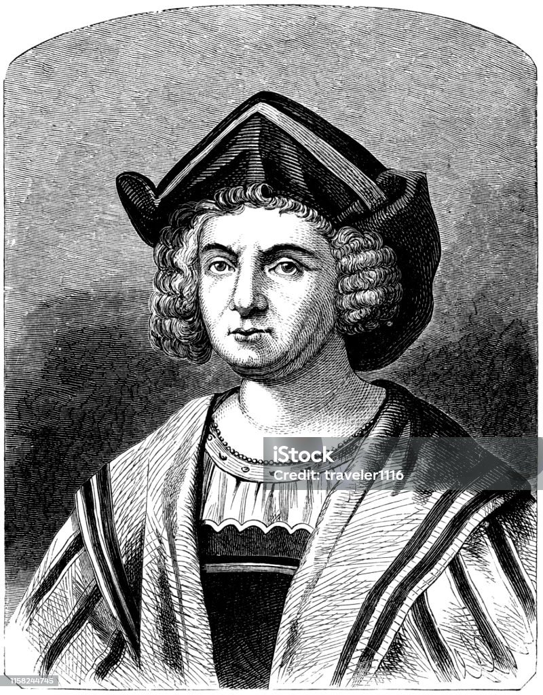
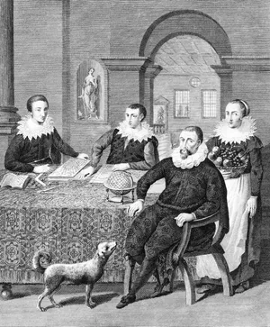
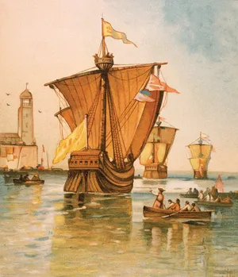
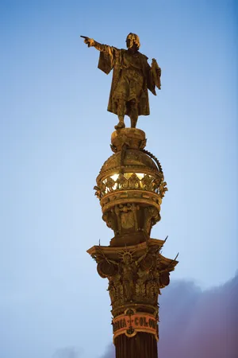

Christopher Columbus (born between August 26 and October 31?, 1451, Genoa [Italy]—died May 20, 1506, Valladolid, Spain) master navigator and admiral whose four transatlantic voyages (1492–93, 1493–96, 1498–1500, and 1502–04) opened the way for European exploration, exploitation, and colonization of the Americas. He has long been called the “discoverer” of the New World, although Vikings such as Leif Eriksson had visited North America five centuries earlier. Columbus made his transatlantic voyages under the sponsorship of Ferdinand II and Isabella I, the Catholic Monarchs of Aragon, Castile, and Leon in Spain. He was at first full of hope and ambition, an ambition partly gratified by his title “Admiral of the Ocean Sea,” awarded to him in April 1492, and by the grants enrolled in the Book of Privileges (a record of his titles and claims). However, he died a disappointed man.
The period between the quatercentenary celebrations of Columbus’s achievements in 1892–93 and the quincentenary ones of 1992 saw great advances in Columbus scholarship. Numerous books about Columbus appeared in the 1990s, and the insights of archaeologists and anthropologists began to complement those of sailors and historians. This effort gave rise to considerable debate. There was also a major shift in approach and interpretation; the older pro-European understanding gave way to one shaped from the perspective of the inhabitants of the Americas themselves. According to the older understanding, the “discovery” of the Americas was a great triumph, one in which Columbus played the part of hero in accomplishing the four voyages, in being the means of bringing great material profit to Spain and to other European countries, and in opening up the Americas to European settlement. The more recent perspective, however, has concentrated on the destructive side of the European conquest, emphasizing, for example, the disastrous impact of the slave trade and the ravages of imported disease on the indigenous peoples of the Caribbean region and the American continents. The sense of triumph has diminished accordingly, and the view of Columbus as hero has now been replaced, for many, by one of a man deeply flawed. While this second perception rarely doubts Columbus’s sincerity or abilities as a navigator, it emphatically removes him from his position of honour. Political activists of all kinds have intervened in the debate, further hindering the reconciliation of these disparate views.
Life
Early career and preparation for the first voyage
Little is known of Columbus’s early life. The vast majority of scholars, citing Columbus’s testament of 1498 and archival documents from Genoa and Savona, believe that he was born in Genoa to a Christian household; however, it has been claimed that he was a converted Jew or that he was born in Spain, Portugal, or elsewhere. Columbus was the eldest son of Domenico Colombo, a Genoese wool worker and merchant, and Susanna Fontanarossa, his wife. His career as a seaman began effectively in the Portuguese merchant marine. After surviving a shipwreck off Cape Saint Vincent at the southwestern point of Portugal in 1476, he based himself in Lisbon, together with his brother Bartholomew. Both were employed as chart makers, but Columbus was principally a seagoing entrepreneur. In 1477 he sailed to Iceland and Ireland with the merchant marine, and in 1478 he was buying sugar in Madeira as an agent for the Genoese firm of Centurioni. In 1479 he met and married Felipa Perestrello e Moniz, a member of an impoverished noble Portuguese family. Their son, Diego, was born in 1480. Between 1482 and 1485 Columbus traded along the Guinea and Gold coasts of tropical West Africa and made at least one voyage to the Portuguese fortress of São Jorge da Mina (now Elmina, Ghana) there, gaining knowledge of Portuguese navigation and the Atlantic wind systems along the way. Felipa died in 1485, and Columbus took as his mistress Beatriz Enríquez de Harana of Córdoba, by whom he had his second son, Ferdinand (born c. 1488).

1484 Columbus began seeking support for an Atlantic crossing from King John II of Portugal but was denied aid. (Someconspiracytheorists have alleged that Columbus made a secret pact with the monarch, but there is no evidence of this.) By 1486 Columbuswas firmlyin Spain, asking for patronage from King Ferdinand and Queen Isabella. After at least two rejections, he at last obtained royalsupport inJanuary 1492. This was achieved chiefly through the interventions of the Spanish treasurer, Luis de Santángel, and of theFranciscanfriars of La Rábida, near Huelva, with whom Columbus had stayed in the summer of 1491. Juan Pérez of La Rábida had been one ofthe queen’sconfessors and perhaps procured him the crucial audience.
The first voyage of Christopher Columbus
The ships for the first voyage—the Niña, Pinta, and Santa María—were fitted out at Palos, on the Tinto River in Spain. Consortia put together by a royal treasury official and composed mainly of Genoese and Florentine bankers in Sevilla (Seville) provided at least 1,140,000 maravedis to outfit the expedition, and Columbus supplied more than a third of the sum contributed by the king and queen. Queen Isabella did not, then, have to pawn her jewels (a myth first put about by Bartolomé de Las Casas in the 16th century).
Christopher Columbus departing from Palos, Spain, on August 3, 1492; chromolithograph from a painting by Ricardo Balaca, 1892.
The little fleet left on August 3, 1492. The admiral’s navigational genius showed itself immediately, for they sailed southward to theCanary Islands, off the northwest African mainland, rather than sailing due west to the islands of the Azores. The westerlies prevailingin the Azores had defeated previous attempts to sail to the west, but in the Canaries the three ships could pick up the northeast tradewinds; supposedly, they could trust to the westerlies for their return. After nearly a month in the Canaries the ships set out from SanSebastián de la Gomera on September 6.

On this first voyage many tensions built up that were to remain through all of Columbus’s succeeding efforts. First and perhaps most damaging of all, the admiral’s apparently high religious and even mystical aspirations were incompatible with the realities of trading, competition, and colonization. Columbus never openly acknowledged this gulf and so was quite incapable of bridging it. The admiral also adopted a mode of sanctification and autocratic leadership that made him many enemies. Moreover, Columbus was determined to take back both material and human cargo to his sovereigns and for himself, and this could be accomplished only if his sailors carried on looting, kidnapping, and other violent acts, especially on Hispaniola. Although he did control some of his men’s excesses, these developments blunted his ability to retain the high moral ground and the claim in particular that his “discoveries” were divinely ordained. Further, the Spanish court revived its latent doubts about the foreigner Columbus’s loyalty to Spain, and some of Columbus’s companions set themselves against him. Captain Martín Pinzón had disputed the route as the fleet reached the Bahamas; he had later sailed the Pinta away from Cuba, and Columbus, on November 21, failing to rejoin him until January 6. The Pinta made port at Bayona on its homeward journey, separately from Columbus and the Niña. Had Pinzón not died so soon after his return, Columbus’s command of the second voyage might have been less than assured. As it was, the Pinzón family became his rivals for reward.
Principal evidence of travels of Christopher Columbus
Remains
There are few material remains of Columbus’s travels. Efforts to find the Spaniards’ first settlement on Hispaniola have so far failed, but the present-day fishing village of Bord de Mer de Limonade (near Cap-Haïtien, Haiti) may be close to the original site, and a Taino chieftain’s settlement has been identified nearby. Concepción de la Vega, which Columbus founded on the second voyage, may be the present La Vega Vieja, in the Dominican Republic. Excavations at the site of La Isabela were still ongoing in the early 21st century, as were those at Sevilla la Nueva, Jamaica, where Columbus’s two caravels were beached on the fourth voyage. The techniques of skeletal paleopathology and paleodemography were applied with some success to determine the fates of the native populations.

Written sources
The majority of the surviving primary sources about Columbus are not private diaries or missives; instead, they were intended to be read by other people. There is, then, an element of manipulation about them—a fact that must be borne fully in mind for their proper understanding. Foremost among these sources are the journals written by Columbus himself for his sovereigns—one for the first voyage, now lost though partly reconstructed; one for the second, almost wholly gone; and one for the third, which, like the first, is accessible through reconstructions made by using later quotations. Each of the journals may be supplemented by letters and reports to and from the sovereigns and their trusted officials and friends, provisioning decrees from the sovereigns, and, in the case of the second voyage, letters and reports of letters from fellow voyagers (especially Michele da Cuneo, Diego Alvarez Chanca, and Guillermo Coma). There is no journal and only one letter from the fourth voyage, but a complete roster and payroll survive from this, alone of all the voyages; in addition, an eyewitness account survives that has been plausibly attributed to Columbus’s younger son, Ferdinand, who traveled with the admiral. Further light is thrown upon the explorations by the so-called Pleitos de Colón, judicial documents concerning Columbus’s disputed legacy. A more recent discovery is a copybook that purportedly contains five narrative letters and two personal ones from Columbus, all previously unknown, as well as additional copies of two known letters—all claimed as authentic. Supplemental narratives include The Life of the Admiral Christopher Columbus, which has been attributed to Ferdinand Columbus, the Historia de los Reyes Católicos (c. 1500) of Andrés Bernáldez (a friend of Columbus and chaplain to the archbishop of Sevilla), and the Historia de las Indias, which was compiled about 1550–63 by Bartolomé de Las Casas (former bishop of Chiapas and a champion of the indigenous people of the Americas).